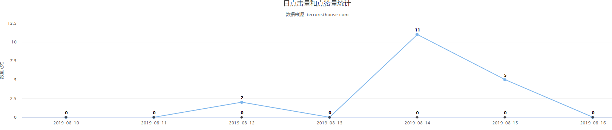

下载higcharts插件放在static文件夹下
前端引入
<script src="/static/highcharts/highcharts.js"></script>
<script src="/static/highcharts/modules/exporting.js"></script>
<script src="/static/highcharts/modules/oldie.js"></script>
<script src="/static/highcharts/highcharts-zh_CN.js"></script>定义在页面中的位置
<div id="container" style="min-width:400px;height:400px"></div>前端js
<script>
var chart = Highcharts.chart('container', {
chart: {
type: 'line'
},
title: {
text: '日点击量和点赞量统计'
},
subtitle: {
text: '数据来源: terroristhouse.com'
},
xAxis: {
categories: {{ list_week_day|safe }}
},
yAxis: {
title: {
text: '数量 (次)'
}
},
plotOptions: {
line: {
dataLabels: {
// 开启数据标签
enabled: true
},
// 关闭鼠标跟踪，对应的提示框、点击事件会失效
enableMouseTracking: false
}
},
series: [{
name: '点击量',
data:{{ clicknum_list|safe }}
}, {
name: '点赞量',
data: {{ praise_num_list|safe }}
}]
});
</script>路由
# 点击量统计
re_path('article/click/', article.click,name='article/click/'),后台方法
from blog.utils import function
# 点击量
def click(request):
recent_seven_days = function.recent_seven_days()
list_week_day = recent_seven_days[::-1] # 进行倒序
clicknum_list = []
praise_num_list = []
# print(list_week_day)
for v in list_week_day:
click_num_obj = Praise.objects.filter(click_addtime=v,click_sort=1).aggregate(clicknum=Count('click_sort'))
praise_num_obj = Praise.objects.filter(click_addtime=v,click_sort=0).aggregate(praise_num=Count('click_sort'))
# print(click_num_obj['clicknum'],praise_num_obj['praise_num'])
clicknum = int(click_num_obj['clicknum']) if (click_num_obj['clicknum'] is not None) else 0
praise_num = int(praise_num_obj['praise_num']) if (praise_num_obj['praise_num'] is not None) else 0
clicknum_list.append(clicknum)
praise_num_list.append(praise_num)
# print(clicknum_list)
# data=[{
# 'name': '点击量',
# 'data': clicknum_list
# }, {
# 'name': '点赞量',
# 'data': praise_num_list
# }]
# num= [ '20190624', '20190625', '20190626', '20190627', '20190628', '20190629', '20190630']
return render(request,'article/click.html',locals())应用目录下创建untils文件夹，并在其下创建function.py文件，用来获取最近七天日期
# 七天日期
def recent_seven_days():# 通过for 循环得到天数，如果想得到两周的时间，只需要把8改成15就可以了。
import datetime
d = datetime.datetime.now()#2019-6-28 9:25:43.843164
lists = []
for i in range(1,8):#i:1-7
oneday = datetime.timedelta(days=i) #1 day, 0:00:00 2 days, 0:00:00 ... 7 days, 0:00:00
day = d - oneday#2019-06-27 11:32:10.186535 2019-06-26 11:32:10.186535 ... 2019-06-21 11:32:10.186535
date_to = datetime.datetime(day.year, day.month, day.day)#2019-06-27 00:00:00 2019-06-26 00:00:00 ... 2019-06-21 00:00:00
lists.append(str(date_to)[0:10])#2019-06-27 2019-06-26 ... 2019-06-21
return lists页面效果

done。